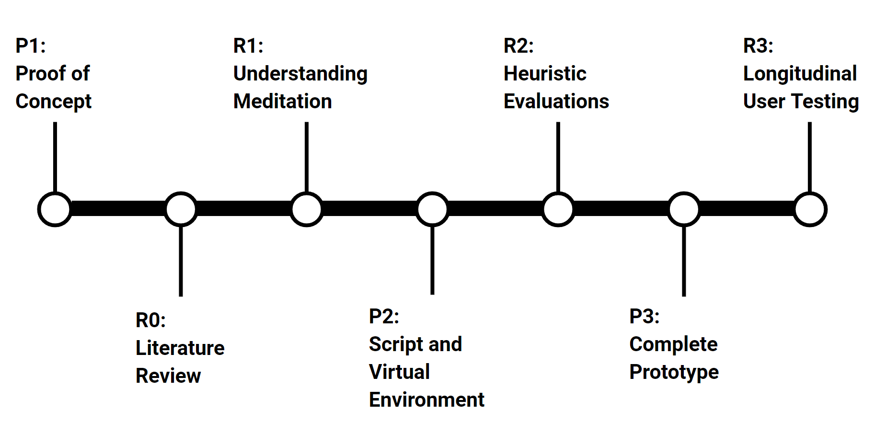
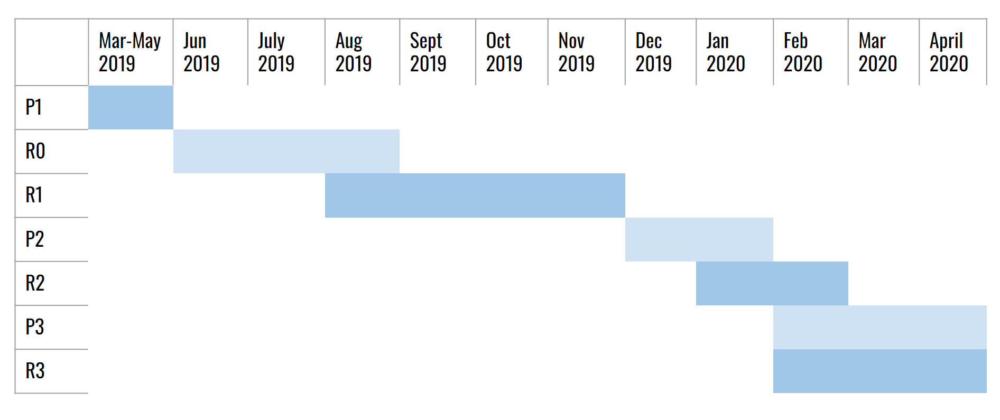
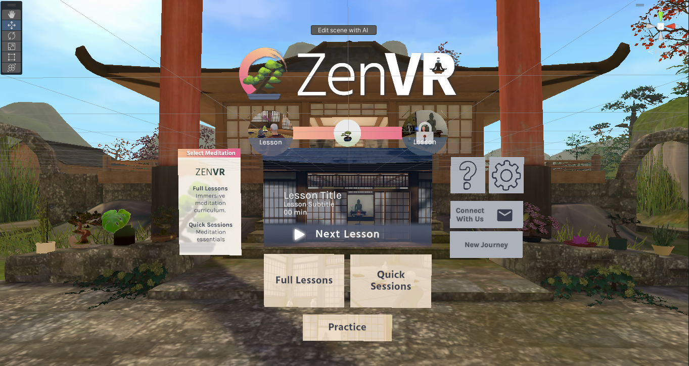

Introduction
ZenVR, an immersive meditation training system born from my Master's thesis, transitioned from academic exploration to a thriving startup under my leadership. In my three-plus years as CEO, I've orchestrated the research, design, and development of the VR application, driving strategic decisions, presenting at conferences, pitching to investors, and managing diverse aspects of the business. From crafting proposals, managing budgets, and running crowdfunding campaigns to collaborating with academics and industry professionals, I've undertaken multifaceted responsibilities. Overseeing a multidiscipinary team of 30+ contributors, including developers, interns, advisors, and researchers, I've mentored numerous Master's student teams, published peer-reviewed research, and engaged in diverse tasks from voice acting and video editing to utilizing AI tools for prototyping designs and marketing.
While it's difficult to summarize so much work on a single portfolio page, I'll pull out some highlights on the research and design front and encourage those interested to reach out to ask question about any particular aspects.
And of course, the ZenVR app is live and launched on the Meta, Steam, and soon to be Pico stores. Feel free to check it out yourself and see why it's the highest rated meditation app on the Quest!
ZenVR on the Meta Quest StoreZenVR: The Master's Thesis Project
Overview:
ZenVR began as my Master's thesis project in the Georgia Tech MS-HCI program. At a high level we followed a very rigorous UX research and design process. We began with formative research methods, that guided the design creation, I built a full Unity prototype, we conducted heuristic evaluations, and then ran a six week longitudinal study with 150 visits. It culminated in statistically significant improvements in user mental health metrics and a peer-reviewed publication at ACM's CHI conference in 2021.
 
Overview of the Project Timeline.
Formative Research
To inform the initial design of ZenVR, we conducted research with meditation teachers and students, both novice and experts. Our goal was to understand the learning journey, the natural stumbling blocks people encounter, what scaffolds real teachers use to aid with these challenges, and generative ideas on what we might want to include in the design. The result of this data collection was a massive amount of qualitative and quantitative findings that we synthesized into the ZenVR prototype designs and curriculum.
Contribution: I actively wrote interview scripts and conducted semi-structured interviews with all groups. I wrote and editted questions on our survey. And I was heavily involved in the synthesis portion of the work, spending dozens of hours affinity mapping and organizing findings into design implications, sketches, and curriculum content.
Processing the qualitative and quantitative research began with physical Affinity Mapping.
However it became clear it was too difficult to stay organized with so much data, so we switched to Miro board.
An output of this research was creating a clear journey map of the process of learning meditation.
Design and Prototyping
Taking all the findings synthesized in the formative research phase, we created scripts for eight meditation classes, recorded audio, and built it into a functional VR prototype for evaluation.
Contribution: I wrote all of the scripts for the lessons. I voiced, recorded, and editted the audio for each lesson. I built the Unity environment, integrated VR, and constructed each lesson with motion capture animation and other effects.
Prototype Evaluation
At this phase we conducted heuristic evaluations with meditation and VR experts, validating form, function, and content of the first prototype. From this feedback we made rapid iterations on the prototype, then kicked off our six week longitudinal study with 15 participants coming in twice a week. We gathered general and specific, quantitative and qualitative feedback as participants went through all lessons.
Contribution: I designed the heuristic evaluation metrics for each group, I administered heuristic evals, administered about half of the study visits, and while the study was going on, actively took feedback gathered in the early lessons and implemented it in the later lessons for an extremely rapid design testing cycle.
Data Synthesis
The final phase of the project involved evalutating and synthesizing both qualitative and quantitative data from 150 study visits, drawing out design implications that would inform the next phase of ZenVR as a startup, and crafting a final presentation and publication.
Contribution: I spent dozens of hours organizing data in massive affinity maps, then drawing conclusions out, section by section. I crafted much of the final presentation and contributed to writing our published paper.


ZenVR: The Startup
Overview:
After the conclusion of the thesis project I was faced with a choice: to let this impactful work die in academia, or to take it into the world to help people. I chose the latter. Launching the company through the CreateX startup accelerator in Summer 2020. Since then, my work as CEO has been extremely multi-disciplinary, but always maintaining strong hands-on guidance of the design and development of the application. I'll showcase some of the elements of that work below.
User Interface Redesign:
A very recent project I led within ZenVR was a redesign and overhaul of our main menu UI. The objective was to create a more visual, easy to navigate, and enticing menu system - while also highlighting user progression through the curriculum in an encouraging way.
This is the old UI. It was a big upgrade from the initial Master's prototype, but, while simple, does not entice the user or truly showcase the content they'll soon be experiencing. The sub menus were also very text heavy and user feedback indicated it was time for an overhaul.
Understanding the flaws in the old UI, I led extensive brainstorming within our team, engaging our developer, our head of marketing, and student interns. Then came the fun part: iterative design!
After many more iterations not featured here, I landed on our final designs and produced Hi-fi mockups in Figma for our developer to implement. The new UI has two versions, one for therapists and clinicians and one for direct consumers. Both versions feature a large and enticing front and center preview of the next or featured lesson and 1-click access for a user to start - removing friction and confusion. The consumer version displays progres through the curriculum above with an incrementing flow showing what has been completed and what lies ahead. And the individual Learn and Quick Sessions modes are MUCH more enticing and user friendly to engage with. The final aspect of the design
Below is the final, now live, implementation in Unity. Worth highlighting is also the addition of an array of bonsai trees, flanking the menu itself, that the user unlocks with each subsequent lesson - introducing suprise and joy into their path of progression!
Mixed Reality Walking Meditation:
With the launch of the Quest 3 and the upcoming Apple Vision Pro, we know that ZenVR cannot stay in only VR forever. We envisioned what sorts of experiences we could create that would be relevant to the overall vision of the application and be impactful to our users. While I cannot say too much about this ongoing project here, I do want to showcase a few key aspects - especially the use of AI to prototype and communicate the designs. To be clear, I cannot claim full design ownership of this project, but as the lead designer at ZenVR, I worked hand-in-hand with one of our student intern designers to craft the interaction designs and overall experience narrative. Happy to discuss more.
A complex document outlining in great detail all aspects of the experience, from entry point, through user journey, and the specific experiences and moments of awe and joy.

Note: Some content blurred for preservation of industry secrets.
A detailed look at how we used AI image generation to envision, represent, and communicate complex MR interaction concepts. (Yes I've had to cut many details here as the experience isn't released yet).
Boat Rowing Meditation:
Designing and building the ZenVR Boat Rowing Medtiation experience has been a long project, spanning a semester long student design project, a design intern, and two development interns. I have overseen and guided the design and development of this project from the beginning. Below are a few highlights of that process.
Boat Rowing Mood and Vision Board
Designing and mapping the various user flows and journeys and the various experience modes.
Details of the overall journey map and specific UI designs.
User Progression System:
Over the Course of ZenVR's 3+ years as a company, I have led many more design and development projects for the application, sometimes working alone, sometimes with our developers, and sometimes with student teams and interns. Below are some highlights from one such project on designing a user-progression system for the app. The screenshots below show off the concept testing phase, where after initial research and defining design implications, we came up with a few different designs that could work. We had to test these concepts with users for feedback, but didn't want to build out these experiences fully in VR to do so. These images showcase methods for designing and communicating VR experiences and interactions at a mid-level fidelity where we could gather genuine feedback, without having to actually engage in development.
It's a bit of an art and a key piece of being a 3D designer, figuring out how to use combinations of screenshots, Figma, and Photoshop to create mockups of 3D interactive experiences.
Leadership and Project Management:
Beyond just conducting research, design, and development, I'm no stranger to public speaking and team leading. Over the course of running ZenVR, I've often had to take on the role of Project Manager and public facing presenter of the team. Some examples of that in action are in creating budgets and timelines for scoped projects and proposals (see the Gannt chart below), roadmapping and feature planning, making many a slide deck for storytelling and pitching projects, running regular development sprint planning and retrospectives using Jira and other tools, and showcasing ZenVR on stages, podcasts, and at conference booths. Below are some highlights.
Scoped timeline for a proposed project, budget not shown.

Roadmapping and feature planning
Conducting bi-weekly Bonsai Sprint Retrospectives
Presenting ZenVR at the IVRHA Conference
Presenting ZenVR at AWE
Featured video and article by Georgia Tech.
In the end, we've only scratched the surface of ZenVR, but hopefully you can get a sense for what I've brought to the project and team over the years. I'm incredibly proud of ZenVR and can speak to any aspect of it at length. If you have any questions, I'm happy to answer them!